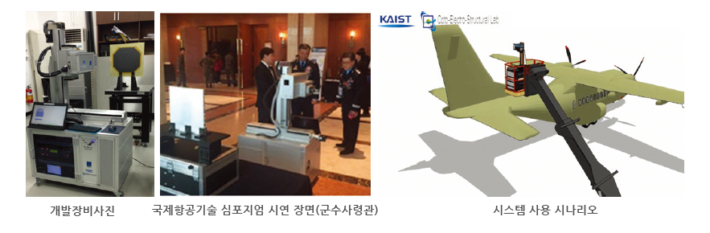
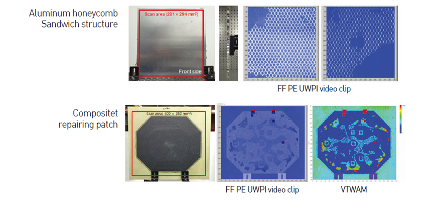
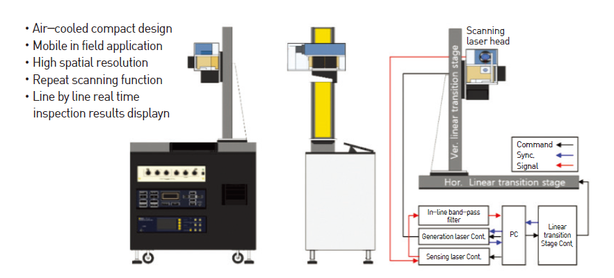

연구성과 10선
연구성과 10선
KAIST RESEARCH ACHIEVEMENTS
이동식 펄스 에코 레이저초음파
전파 영상화 시스템
항공우주공학과 이정률
요약
고체의 두께 방향으로 전파했다가 돌아오는 초음파를 초당 2500점까지 계측하여 3차원적으로 그 전파를 가시화할 수 있는 이동식 소형 레이저 초음파 전파 영상화 시스템(Pulse-Echo Ultrasonic Propagation Imaging)을 세계 최초로 개발하여 이를 항공우주구조의 In-situ 및 In-process 비파괴평가 장비로 시작품화하는 데 성공하였다. 우주발사체(KSLV-II) 복합재 동체, 공군수송기(CN-235) 조종면, F-16 브레이크 디스크, 유도무기 복합재 동체등의 검사에서 실증연구가 수행되었으며 한국공군보유 록히드마틴 F-16 전투기 표준시편 시험을 통과(수요자 인증)하였다. 상기 시스템을 2년간의 개발기간으로 시작품화하여 공군 군수사령부에 최근 납품하는 데 성공하였다. 또한 시작품 개발과정이 보잉에 소개되면서 2016년 2월 항공우주공학과 광전구조실험실이 Boeing-KAIST Technical Contact lab으로 선정되었으며 2년간 Grant를 지원받고 있으며 2016년에는 2호 시작품을 개발하여 보잉에 대여될 예정이다. 또한 3호 시작품부터는 실험실창업기업에 기술이전되어 광기술원에 납품될 예정으로 광기술원에서는 검사표준화 장비로 채택할 예정이다. 끝으로 한국항공우주산업, 한국화이바등과 관련 기술 고도화 과제를 계속 수행 중에 있어 그 기술적 경제적 파급효과가 지속될 것으로 판단한다.
연구배경
항공기, 우주발사체, 미사일등은 제작 공정의 마지막 단계로 품질평가를 비파괴적으로 전수 검사 받게 된다. 납품을 위한 필수조건으로 기존에는 물을 뿌리면서 공기압으로 초음파를 투과시키거나 물속에서 초음파를 투과시키면서 검사하게 된다. 따라서 하수시설 및 대형 공간 이 필요하며 검사대상의 형상에 따라 별도의 검사장치가 요구되는 등 공정지연을 초래하며 인증여부 및 높은 가격(수십 억) 때문에 항공우주 부품제작사들의 초기 비용 투자에 절반정도를 차이할 만큼 큰 진입장벽이 되고 있다. 이러한 문제점을 개선하기 위해 항공산업 선진국들은 레이저 유도 초음파에 주목해 왔으며 대표적으로 미국의 Tecnar 사와 Par사가 상용화에 성공하였으며 우리나라가 도입하는 F-35 전투기 개발에 최초로 투입될 예정으로 알려져 있다.
 시작품 납품 및 공군 활용
연구내용
KAIST 광전구조실험실에서는 수년간의 기초연구결과로 2015년 초 공군에서 보유한 F-16 비파괴표준시편 시험을 통과하면서 시작품 납품과제를 수주하였으며 하기 사진과 같은 시스템을 2016년 12월 납품완료(그림1)하였다.하기 시스템은 연구배경에서 소개된 Tecnar 사와 Par사의 시스템에 비해 다섯 배 이상 검사속도가 빠르며 소형화에 성공하여 항공우주구조의 일체화 대형화 전략에 따라 제작된 대형 구조를 이동하지 않고, 검사장비를 이동하면서 원하는 곳을 검사할 수 있게 되었을 뿐만아니라 In-service 항공기의 In-situ 검사도 가능하게 되었다. 그림 1은 이러한 검사전략으로 공군이 CN-235라는 수송기를 수직꼬리날개를 어떻게 검사할 지를 보여주고 있다. 그림 2는 미국 로스알라모스국립연구소(Los Alamos National Lab)에서 의뢰한 샌드위치 시편결과로써 높은 공간 해상도로 하니콤셀이 가시화 되는 것을 볼 수 있으며 보잉과제에서 수행하고 있는 내용인 복합재 패치의 경우도 패치에 인공적으로 삽입된 결함뿐만 아니라 접착레진의 흐름과 뭉침이 구별될 만큼 우수한 공간 해상도와 감도를 보여주고 있다. 또한 검사 속도 역시 최대 2.5 kHz로 다섯 배가 빠른데 이는 그림 3의 시스템에서 초음파를 발생시키는 레이저빔과 초음파를 수신하는 레이저빔을 하나로 결합 해서 compact한 스캐닝헤드로 빠른 검사속도를 달성했으며 한 점에서 초음파 가 발생하고 수신되는 메카니즘으로 매우 높은 공간해상도를 획득하였다. 또한 국내외 특허를 보유한 초음파의 전파를 가시화 하는 기술을 통해, 검사결과를 2차원 이미지가 아닌 시간에 따른 3차원 동영상으로 볼 수 있게 했기 때문에 전파특성을 검사자가 동시에 이해할 수 있어 결함이나 손상을 간과하지 않게 하는 새로운 기술이 만들어졌다. 또한 두꺼운 구조에서 충분한 신호대잡음비를 획득할 수 있도록 서브마이크로미터 수준의 공간정확도로 같은 점을 정밀하게 재검사할 수 있고 고속신호처리기술을 개발하여 실시간으로 검사결과를 확인할 수 있게 되었다. 기초연구단계에서 시작품단계까지 지속적으로 세계최고 수준을 유지하고 있다.
 검사 결과 대표 사례 (미국 로스알라모스국립연구소시편(위), 보잉시편(아래))
 시스템 구성도
우수성과 및 기대효과
- 제항공기술 심포지엄, ICAS2016, SWEET 2017 등 국내외 장비전시회 초청시연
- 공군 군수사령부 수요자인증 통과 및 국내기술의 비파괴검사장비 최초 납품 (2.7억원)
- Boeing-KAIST technical contact lab 선정 및 2.7억원의 Grant
- 공군 군수사령부에 국내 기술의 비파괴검사장비 최초 납품
- 2017년 보잉에 추가 시스템 이전이 계획되어 있으며 공군의 추가신뢰성 확인을 통해 전국 부대에 배치될 가능성이 높음
- 한국광기술원에서 시스템을 도입하여 기업지원 검사표준화 장비로 활용(2018년 2월서비스 시작 예정)
- 차세대 전투기(FX사업)로 도입 중인 F-35의 품질평가가 유사시스템으로 이루어졌지만 국내 기술이 2배의 빠른 검사속도와 소형화에 성공하였기 때문에 한국형 전투기(KFX) 개발과 운용에서 수입대체 효과 및 신시장 창출 등 큰 경제적 효과를 발생시킬 것으로 판단.(한국항공우주산업, 장비 적용성평가, 2년 2억 계약 체결 2016년 12월 완료)
- 이미 실험실 창업이 이루어져있어 상용화와 사업화가 빠르게 진전될 수 있을 것으로 기대
참고자료
[논문1] H J Shin, J Y Park, S C Hong, and J R Lee, In situ Non-Destructive Evaluation of an Aircraft UHF Antenna Radome based on Pulse-Echo Ultrasonic Propagation Imaging, Composite Structures, Volume 160, p. 16-22, 15 January 2017 외 다수
[논문2] J R Lee, Apparatus and method for full-field pulse-echo laser ultrasonic propagation imaging, US Patent, Application number :15007413, 2016.01.27., Publication number: 2016.0349217, 2016.12.01.(미국 특허 등록)